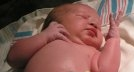

Twins Graduate
"The twins are about to graduate from Middle School," says astonished mother, Diana, "but some kids are just finding out that they are twins! One kid recently asked, 'how did you get up here so fast, I didn't see you go by me?' All these years he had seen both boys around without ever realizing that they were twins. They still look a lot alike. For their graduation ceremony the twins have requested to dress alike with matching shoes, ties, pants, white shirts etc. They are hatching a plan! I think they want everything to be just alike so they can trick the school. We'll just have to wait and see."
Karen Fit to Burst
"Karen looks lovely in her last stage of pregnancy," coos childbirth veteran, Diana. "She is extra big with this one, as we women get with our later pregnancies. The more children I had the less things from the store fit and the more I had to make my own maternity clothes. But however big she gets, Karen looks radiant. And it won't be long now, she's due at the end of July."
Kira Gets Baptised
�Eight is great!�, announced Kiriana Rose Beal after being baptized on her birthday, May 9th. Kira�s dad Scott conducted the baptism and confirmation. Her mom and Soren gave brief talks. Many friends attended. Watch the slideshow for a glimpse of her big day.
Fourth of July:
The Pilgrimage This year everyone except the Beals and the Lanyons attended the Fourth of July celebrations in Ashland. Several Cluffs reported it to be the best parade ever. There was also more than ever to do downtown in the booths section. "There was a pony riding area this year," reports Tiana, "and Talea got to ride a horse for the very first time. She loved it!" In Georgia the Beals celebrated the day with a bar-b-q followed by a trip to beautiful Calloway gardens in attempt to watch the award winning fireworks display. Unfortunately, they got "Cluffed" into stopping on the side of the road to watch the display, having seen several other cars parked there, and ended up missing the whole display due to trees blocking their view. Meanwhile, 6,000 miles away in the land that never wanted the Americans to be independent in the first place, the Lanyons covertly celebrated Independence Day with a low-profile mock-American backyard bar-b-q and some patriotic music (played quietly indoors).
This year everyone except the Beals and the Lanyons attended the Fourth of July celebrations in Ashland. Several Cluffs reported it to be the best parade ever. There was also more than ever to do downtown in the booths section. "There was a pony riding area this year," reports Tiana, "and Talea got to ride a horse for the very first time. She loved it!" In Georgia the Beals celebrated the day with a bar-b-q followed by a trip to beautiful Calloway gardens in attempt to watch the award winning fireworks display. Unfortunately, they got "Cluffed" into stopping on the side of the road to watch the display, having seen several other cars parked there, and ended up missing the whole display due to trees blocking their view. Meanwhile, 6,000 miles away in the land that never wanted the Americans to be independent in the first place, the Lanyons covertly celebrated Independence Day with a low-profile mock-American backyard bar-b-q and some patriotic music (played quietly indoors).
Abnormal Kids
"Dane and Karen didn't get normal children," says Diana with giant, green flames in her eyes, "they just obey to the max! Karen quietly leads her children in good works and they are all so obedient." Maybe Dane and Karen could write a Tuffcluff article about how they do it to help the rest of us! How about it Cluffers?
A Mooooovie-Star!
"Tiana looks like a movie-star," says movie-star fan, Diana. "Her face, form and hair are beautiful! We couldn't stop looking at her. Her hair is long and has turned dark brown now and she wears it curly and clipped back with some curls falling down a bit. That is her best hairstyle yet. She also has lost the weight from her pregnancy and is now really slim. Having a baby really has made her extra beautiful as it does many women."
Chicken Report There is cannibalism in the coop! A Rhode Island Red egg was laid, hatched and then promptly abandoned. A sweet little Bantam adopted it and tried to keep it warm and safe but couldn't protect it from the others who attacked it and ate it alive - every last bit. The Bantam mom was so sad that she refused to eat for several days. What is the coop coming to?
There is cannibalism in the coop! A Rhode Island Red egg was laid, hatched and then promptly abandoned. A sweet little Bantam adopted it and tried to keep it warm and safe but couldn't protect it from the others who attacked it and ate it alive - every last bit. The Bantam mom was so sad that she refused to eat for several days. What is the coop coming to?
Canning Season
"We've had so much fruit on our trees this year," says food-horder, Diana, "that I'm up until midnight each night canning! It's back breaking work but I have to do it or the fruit would just go to waste."
WIN WIN WIN!
 This month we're introducing a brand new contest with a prize giveaway (last time Dallas won The Incredibles on DVD - mainly because he was the only one to enter the contest!). We really want your help in making the website a cooler place so PLEASE enter the competition (or at the very least force your kids to do it as a homework exercise in writing). We're looking for your worst traveling disaster stories for an upcoming feature article in the travel section. Send your horror stories to us here at Tuffcluff and the best/worst one will win the DVD of their choice!
This month we're introducing a brand new contest with a prize giveaway (last time Dallas won The Incredibles on DVD - mainly because he was the only one to enter the contest!). We really want your help in making the website a cooler place so PLEASE enter the competition (or at the very least force your kids to do it as a homework exercise in writing). We're looking for your worst traveling disaster stories for an upcoming feature article in the travel section. Send your horror stories to us here at Tuffcluff and the best/worst one will win the DVD of their choice!
Get-Togethers
Just in case you are unaware, family reunions for the Dennis and Diana Cluff family take place each year in Ashland on and around the Fourth of July. So make a permanent mental note then get yourself to The Homestead for the party! Also, in 2006 we will be gathering for a big Christmas reunion, so don't forget to put that in your calendar!
Have Your Say
Don't agree with something we've said? Want to write an editorial? Have something to report? Want to see your article in print? It's easy! Just send your submissions and pictures via email to: info@tuffcluff.com
Next Issue
Don't miss the FALL 2006 edition of The Cluff Family Times including: Halloween, Thanksgiving, Tasha goes to Law school, Edward's Primary Election, Accidents and Near Misses, Sports, Art, the Barn Door Saga and loads more! Coming quite soon.
|
|
NEW CLUFF BABY BOY: Dyson Nephi
"There are some things in life that never get old," says mother of six, Karen. "Chocolate from Daisha and Edward, for instance, is a wonderful treat that could never be tiresome. My favorite though, with much less calories, is holding my just born infant. Over this summer Dane and I and the rest of the Cluff Clan welcomed our 6th child, 4th boy, into our family. He was born right on his due date July 24th at 5:22 am. I had been trying everything to go into labor that whole week since my mom had driven all the way up from Vegas to help. She had rubbed my feet and legs for hours. We went for drives in the Rabbit on all the bumpy roads we could find to try to get things going. After a big day I finally made it to bed around 11:30pm and read scriptures. I was almost asleep when I felt myself getting wetter and wetter. I thought to myself, " Well, I finally have done it, I've wet my pants and I can't hide this one." But then when I could not stop the flow I realized what was happening and woke Dane up. I can't believe how much water was in there!! Gallons, it seemed! I could soak a bath towel in a matter of seconds! Kaylynn and Jazzy came to the hospital with Dane and mom and I and waited for the 5 hrs until he was born. I have to say, one thing that does indeed get old, LABOR!! I don't know if it was because I am older or because I was so tired, but this labor was horrible for me. I felt like my hip bones would burst through my skin. I asked for an epidural but, of course, there was no time. Dyson was speeding down the birth canal and would not be stopped! After a few loud screams and a couple of impatient kicks at the doctor I finally got him out, my way, and paid for it with much more pain after the birth. He weighed 9lbs 3 ozs, a whole pound less than his big brother, but the healing was much harder since I delivered in a hospital this time and they did not do all the stretching and other things to help with the birth there like the midwives do. All in all, the pain of birth didn't dim my triumphant prize of holding him in my arms. It was a wonderful experience that I hope I don't have to do again, EVER!! But you just never know, he may need a play mate!" Supportive husband, Dane, had this to say; "The labor and birth was harder than Karen had anticipated it being. It was her first hospital birth in 13 years. She always goes too fast for painkiller, so she pioneered her way though again. All went well though and mother and baby are doing very well." Congratulations to the whole Cluff family and a very warm welcome to beautiful little Dyson!
Diana's Money Management Tips
Diana has taken control of the family finances by implementing a new savings system based around a box full of envelopes. For years she put the money they earned into a series of envelopes that were labeled according to their different needs. She says being her own bank was a great success but does admit to having lost a few thousand dollars along the way (that's another story). "My whole life I have always been careful with money," says super-thrifty housewife, Diana. "I always bought clothes, food and other things at a great savings. But then, four years ago, bad times hit when both Dennis and I had medical problems and big surgery bills. We were just hoping to keep the bills paid and food on the table when I was struck with the idea of using the envelope system to save money for taxes, food, clothes, school, travel, repairs, tires, the yard, savings and many other needs. It wasn't very long before the envelopes were bulging and then over-flowing. We were shocked at the savings, and all this when our paycheck was at the lowest point of our life for a year. It all came about in strange ways like; our usual $150 weekly grocery bill was reduced to $20, our fruit trees produced so much that I had to can until midnight for years, our three refrigerators, two freezers and many cupboards were full and we gained weight, and many other bargains that came to us without hurting our budget. It was a miracle - a blessing from consistent tithe paying our whole lives. When the chips were down, the Lord opened the windows of heaven and not only paid our needs but blessed us with luxuries too. The Lord, who created everything and doesn't need our money but asks for it in tithing to test our faith and obedience, watches to see if we will obey then when our needs come, he pays us more than we ever paid him. After a few years of using the envelope money management system, I got a tip that I could get 5% interest by buying short term CD's. I am off stocks as I lost money for years in them with all the dishonest people running them. I took my big bundles of money in to buy CD's and the people were shocked at the amount of cash, even though they tried to act professional about it. It had taken over 20 minutes to run the first money bundle though the counting machines. Most people don't use home savings anymore or bring cash in to do business. I found out that if you bring in over $10,000 the Federal Government gets a report of your money, to see if you are laundering it for drugs or whatever crime you are in. I hate that our money is checked but I suppose it helps fight crime. Now, our finances are in great shape and it is all because the windows of heaven have been opened to us these last four years. Not only were our problems with work and health taken care of but the greatest material blessings of our life have come to us as well. We can hardly hold all the blessings; two motorhomes, two boats, two rider mowers, three vans, four small cars, new house siding, a drum set, two guitars, seven cast-iron bistro sets, an outdoor stove, a compressor staple gun, many trips in the US and Europe, money in savings and countless other blessings too. My biggest money saving tip is to pay tithing because anyone who is willing to faithfully pay their tithing will be blessed with [a barn-full of] things too."
The Beal's North Eastern Road Trip
The Beal family took a road trip from Georgia to New York in August. "It was so fun," reports Melanie. "We loved Boston! We explored Harvard in Cambridge and did the historical walking tour downtown Boston. We saw Niagara Falls and were impressed with the Canadian side. We also met Scott�s stepbrother Mike and family when we toured the Church history stuff. Joseph Smith�s farm, the Sacred Grove and the Hill Cumorah were highlights. This is definitely one of the 1000 best trips you have to make before you die." The Photo is of our family in front of the Joseph Smith farmhouse.
Remembering Norway: Diana Finds Herself
In 2003 Dennis and Diana went to Norway. Four years later, Diana is still stunned at what she discovered there and re-tells her experience here. "When Dad and I went to Norway," Diana remembers, "our life-long dream was finally fulfilled. Dad always used to tell me he would take me for our 10th university but it was closer to our 40th before we made it! As we stood in line to go at the airport near London I could hear Norwegians talking to each other and my thoughts turned to my Grandmother George, who had a Norwegian mother, and the way she used to talk. She spoke English but must have used some Norwegian words because it all seemed so familiar. The Norwegian women spoke in soft and beautiful tones that sounded like music. I could have listened to them all day, it was so beautiful. I felt so happy hearing everyone speak, it felt like going home. When we stepped out of the plane the air was fresh, crisp and clean. It smelled sweet and felt like silk. It reminded me of what the air was like when I was a child. Norway looked a lot like Oregon with fjords. It was full of tall mountains and green trees. Now and then we would pass cute fishing villages on the edge of the fjords with boats lined up along the docks. When we arrived in Oslo and saw the people, Dad and I were shocked to find that so many of them looked and dressed just like me. The typical Norwegian look is a very high forehead, a broad, square face, light eyebrows and a turned up nose. Most are very tall and thin, a lot had curly hair and all were so beautiful. I really felt like I had found where my looks came from in a big way. I may not be as tall and thin as a lot of them, but otherwise I really look like a Norwegian. Also, many seemed to like unusual clothes and color combinations, just like I do! I can't tell you how strange it felt looking at everyone, even the men, and thinking how much I looked like them in so many ways!"
Tuffcluff© cares. We do! We want to bring sunshine and happiness into your dreary little lives, and to prove it we've devised a Cluff-friendly entertainment guide to keep TuffCluffs the world over happy and content.
Cool Websites For... Travel
If you're going on vacation this year, don't leave without checking out these helpful websites first. Need to know what the currency exchange rate is? Never fear, just click here. Want a killer deal? Check out Travelzoo. Need to read up on your destination (or anything else, for that matter)? Wikipedia is for you. Need to shed a few pounds before hitting the beach? You can't go wrong with Nutritiondata. Traveling on a budget? The Art of Travel says you can see the world on just $25 a day. When you arrive, avoid getting lost with either Multimap or Google maps. And finally, if you just can't get away try armchair tourism instead with this virtual strolling website. Enjoy your holiday!
Tuffcluff Film Club
Summer's on its way. Get in the mood with our super hot selection of sizzling classics to fit the mood of each month.
JUNE:
Some Like it Hot (1959) was ranked number one on the American Film Institute's list of 100 Funniest Movies of all time. It's not just an American classic - it's a Cluff classic as well. If you haven't seen this movie, you aren't fit to call yourself a Tuffcluff! This movie has it all, action, comedy, romance, suspense, cross-dressing, type-O blood and the list goes on... It really IS one of the greatest films of all time!
JULY:
It's the 4th of July. You've done the parade, the game booths, the craft fair, the bandshell, the bar-b-q, the lake and there are still a few hours to go before fireworks. Kill that time watching a great patriotic movie. Here is our shortlist:
For the Kids: Pollyanna (1960) is a great family movie with so much love for America that they even wrap Hayley Mills in a flag at one point!
For the Family: To Kill a Mockingbird (1962) and Mr. Smith Goes to Washington (1939) are both stellar dramas that pluck at your patriotic heartstrings.
For the Geriatrics: Yankee Doodle Dandy (1942) It's on the top 100 films of all time (albeit #100) so the critics like it. It's less satisfying for the younger generations but worth seeing if just for a look at a hardened gangster (James Cagney) doing crazy high kicks in a dance that can at best only be described as painfully embarrassing.
AUGUST:
It's the perfect month to sit back with a big bowl of blackberries over ice cream and watch a movie marathon. Bask in nostalgia this August by watching an Anne of Green Gables (1985) miniseries marathon. It won an Emmy and is lots of fun. Anne of Green Gables: The Sequel (1987) is less interesting (it's only good for a few minutes at the beginning and a few minutes at the end) and Anne of Green Gables: The Continuing Story (2000) is untested ground. Get started now because each movie runs about 200 minutes long!
WILDCARD:
This Summer our wildcard movie is The Sound of Music (1965). Yes, you've seen it a thousand times and it's one of your favorite things, but now a good thing just got better with the release of the Sing-Along version! Make a night of it like they do in NY and London and dress up in crazy S.O.M. costumes (nun, brown paper package tied up with string, white dress with blue satin sash, lederhosen, chintz curtains, snowflakes on your nose and eyelashes etc..) then boo the Nazis, hiss the Baroness, bark at Rolf, cheer for Maria and whistle at the Captain. It's a riot for the whole family!
For more great Tuffcluff movies click here.
 Got a problem or a question? The Cluff Family Times' lifestyle guru can solve all of your personal, romantic, financial, spiritual, decorating and fashion dilemmas. The answers are only a click away. Do you have a question for our agony aunt? Send it to: info@tuffcluff.com Got a problem or a question? The Cluff Family Times' lifestyle guru can solve all of your personal, romantic, financial, spiritual, decorating and fashion dilemmas. The answers are only a click away. Do you have a question for our agony aunt? Send it to: info@tuffcluff.com
I just got a new Korean cookbook - 101 Ways to WOK Your Dog!
What did one eye say to the other?
Just between us, something smells!
Why did the bacon laugh?
Because the egg crack a yolk!
|
|
Finding Jojo
Jojo�s H2O obsession runs deep. After spending countless hours at the kitchen sink with the water running full blast, Joseph learned to dive to the bottom of the pool during the summer of his first year. His thick skinned mom would drop a favorite toy into the pool saying, �Go get the car Jojo.� Then pushing his head down toward the bottom of the pool she would wait for him to return to the surface. If empty handed, the process was repeated until the toy reappeared in Joseph�s hand. During his second summer Jojo began to dive from the side of the pool into the deep end and swim the width of the pool, finally learning how to come up for a breath. Unsuspecting adults were astonished to find a toddler swim past them. Proud mom tried her toy diving technique with other youngsters less successfully. �I guess he takes after me,� Melanie says, �I�ve been told I tried to jump into the seals exhibit at the zoo when I was about the same age.�
The Twin's Quest For Individuality
Dallas and Weston have graduated from Middle School and only have a couple of months before starting High School. With this rite of passage looming, the twins are getting increasingly desperate for an identity of their own. "It's hard to be an individual," say Dallas and Weston in unison, "when mom still wants us to dress alike! We're flippin' 14! What the foo?!" But the twins are looking for more than just cool, new personas, they also want to shake off the old "terrible twin" stigma as well. �We�re tired of everyone thinking that we�re wild and bad,� protests one of the twins, clearly fighting back the tide of emotion that threatens to overwhelm him. �That was a long time ago. And we�ve grown up a lot now and are different people but nobody wants to gives us another chance!� �It�s so lame,� agrees the other twin with a defiant look in his eye. �It�s not like we judge anyone on when they were two years old. I mean, it�s been years since we�ve even broken a window for crud sakes! But everyone treats us like we�re still two. I wish people could just get over that.�
Ammz in Vegas: Makin' Bank & Pimpin' the Women!
"This summer for Ammon was one to remember," says his mother, Karen. "He went to Las Vegas right after school was out to spend the summer working with Jeff. He made lots of money there and was a big hit with the ladies." "Vegas was quite an adventure," says Ammon. "I worked with my Uncle Jeff full time and on my free time I would go out to the movies with different girls or hang out at the house and swim with my cousins. For work, Uncle Jeff and I drove around in a mobile franchise called "Stay Sharp" where we would go to salons around the area and sharpen scissor shears or clippers blades. When we had some days off, we would go to different camps. We went to Indian reservations and dry lake beds. Every Monday we would go to Nellis Air Force Base and clean the surgical instruments for the hospital. My very favorite part of my summer in Vegas was getting to know what "flavor of candy" (type of girl) I liked best. The income of course was very convenient and nice. I bought so many clothes that I almost couldn�t fit them all in my suit case to come home at the end of the two months I was there. Seeing my cousins and aunt and uncle and spending the entire summer in Vegas was an awesome experience. One of the most memorable experiences I had while I was there was an experience that I will never forget. I had the opportunity to shake President Monson's hand while we were at a camp in Aspen Grove, Utah for the 4th of July week. This vacation was a very educational and thrilling experience that I will remember forever!"
Baby Bird Johnson
After fixing her dogs, getting rid of her kittens, giving away her chickens and flushing her fish, Tiana finally felt she was getting back a little breathing room (she had 25 heartbeats in her house at one point) when suddenly, in a weak moment, she flipped a U-y and bought a grey and yellow cockatiel. In keeping with their family's Western theme they named the bird Spur to fit in with their dogs Cowboy, Indian and Scout. The dogs and the bird seemed to get along great but it was Hyrum that Spur really attached himself to. "He acts all excited like the dogs do when Hyrum comes home," says pet expert, Tiana, "only he squawks instead of barks. But even more than Hyrum he loves himself. He's so vain and would spend all day looking at himself in front of the mirror, or the oven door if we let him. He doesn't like me very much though. He flies away whenever I come near him. Oh well, win some, lose some."
Pregnancy: A Personal History
"I lost five of my babies before birth," Diana reveals. "If I hadn't, I would have had 15 children. I always hoped to have 12 but after our first two sons, it looked like having children was over for me. We had lost our first son soon after birth and almost lost the second at birth and then again a day or so later even though I had been careful and stayed in bed the whole pregnancy. I thought I wouldn't be able to have anymore children but my goal of having 12 was still accomplished, much to our surprise, and this is how: When Dane was two he prayed daily for two years for a sister. I told him I wanted a sister but didn't think I could have any more children. He said he knew how we could get a sister - through prayer. I was so impressed, but didn't even think prayer would work in my case. When Dane was four his sister, Melanie, who we almost lost in the second month of pregnancy, was born. Then three more sisters; Natasha, Daisha and Tiana were born, each two years apart. I had such a heart problem after the sixth child that I was told not to have anymore children. Many years went by as I tried to improve my problems and get strength to care for my family. Then when I was 40 Tiana, who had been praying for a sister, had her prayers answered when Shira came. Then three boys; Nial, Dallas and Westen, were born after my prayers for another child to keep Shira company. I had six pregnancies in my 40's. At age 49, when I had my last pregnancy, I was hoping to keep having babies till 55. After the twins I told the doctor I wanted to have more and he said I was in really great shape and could do it. But after having chemotherapy my reproductive days were over. Oh well, win some, lose some."
Scouters
 After attending Nial's Eagle Scout Court of Honor the twins were inspired to try hard than ever in the quest for their own Eagles. Dallas predicts that he and Weston will have their own Court of Honor by December 2007. Watch this space to see if his prediction comes true. If your scouter hasn't been mentioned in this article, it's because you're not sending in any info. Scouting Pics
After attending Nial's Eagle Scout Court of Honor the twins were inspired to try hard than ever in the quest for their own Eagles. Dallas predicts that he and Weston will have their own Court of Honor by December 2007. Watch this space to see if his prediction comes true. If your scouter hasn't been mentioned in this article, it's because you're not sending in any info. Scouting Pics
 Here, wedged between 'Lifestyles' and 'Bizarre-o World', Diana imparts some of her experience and wisdom to help with everyday problems. Here, wedged between 'Lifestyles' and 'Bizarre-o World', Diana imparts some of her experience and wisdom to help with everyday problems.
THIS WEEK: A Holy Healing Tip
Spirtitual Accupressure
"After your nightly prayers, continue to kneel on your knees and do accupressure on yourself to get good energy for the next day and prevent heart attack. I use my own toes to press and rub the bottoms and tops of my feet. Then I rub the inside of my knees, head, legs, chest and any other sore spots I have." (though not with her toes, we presume)
Sleeping Outside (part 159):
The UFO Incident "At 3:39 am I woke up and looked up into the sky from my bed outside," says conspiracy theorist, Diana. "I was wondering about the coyote that had been running around our chicken pen the last few nights when suddenly, I saw it! It was a large dot of light moving in a path like the satellites do. But it wasn't a satellite. I watch satellites all the time at night going through space. They are small moving dots of light, like a star that moves. It didn't look like that. It looked like it was at the same altitude as a jet but it wasn't a jet. It was big and round - bigger than a normal dot of light or than any star I had ever seen. It was moving silently and at a steady speed. I jumped up to get a better look. It was moving from south to east. I didn't see any flashing lights like planes and it didn't move in any odd way, it looked like it was set on a path. Maybe it was a space station or something bigger than I have seen so far in my night sky viewing. If not, it was probably a UFO that the government was flying at night to test. That or a bungee jumping UFO trying to kidnap me once again!"
"At 3:39 am I woke up and looked up into the sky from my bed outside," says conspiracy theorist, Diana. "I was wondering about the coyote that had been running around our chicken pen the last few nights when suddenly, I saw it! It was a large dot of light moving in a path like the satellites do. But it wasn't a satellite. I watch satellites all the time at night going through space. They are small moving dots of light, like a star that moves. It didn't look like that. It looked like it was at the same altitude as a jet but it wasn't a jet. It was big and round - bigger than a normal dot of light or than any star I had ever seen. It was moving silently and at a steady speed. I jumped up to get a better look. It was moving from south to east. I didn't see any flashing lights like planes and it didn't move in any odd way, it looked like it was set on a path. Maybe it was a space station or something bigger than I have seen so far in my night sky viewing. If not, it was probably a UFO that the government was flying at night to test. That or a bungee jumping UFO trying to kidnap me once again!"
Brush With A Wild Animal
"I was sleeping outside," says animal hater, Diana, "and in the middle of the night an opossum jumped onto my bed! I felt it and screamed but it wasn't scared so I jumped up to get my three foot steel pole that I keep by my bed for these kinds of encounters. I couldn't find my pole anywhere but luckily all the movement finally scared the opossum away. After it had run off, I got dad and made him come sleep outside with me so he could scare away any more beasts with his snoring."
|

 12 points
12 points
 5 points
5 points